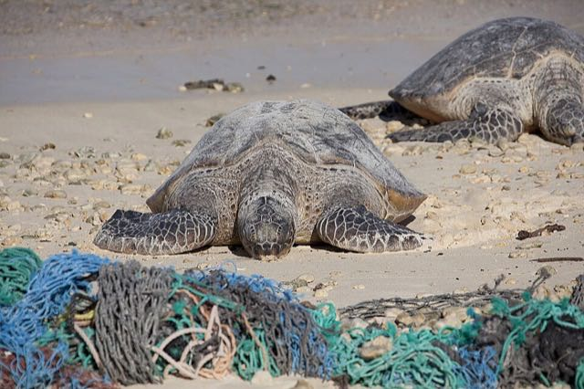

Help the ocean from home
You do not need a boat to look after the sea. A lot of the rubbish in the sea starts on land, so what we do at home and at school really counts.

Lost nets
Fishing nets that get lost can drift for years. Turtles, seals and fish get stuck in them.
Bags that look like food
A floating plastic bag can look like a jellyfish. Hungry sea turtles sometimes eat one by mistake.
Plastic does not rot away
Sun and waves break plastic into tiny bits called microplastics. Small sea animals eat them.
My ocean checklist
Tick a box when you have done it.